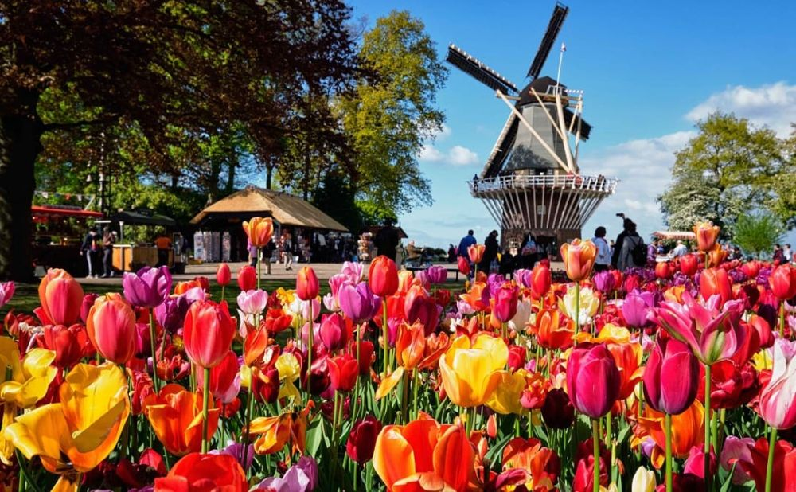

Descoperă Grădina Keukenhof - Paradisul florilor și al primăverii din Olanda
Grădina Keukenhof este o destinație iconică din Țările de Jos, cunoscută pentru frumusețea sa și diversitatea florilor:
-

Marele spectacol de flori
Keukenhof este renumită pentru prezentarea extraordinară a milioane de lalele și alte flori într-o explozie de culori.
-

Grădini tematice
Grădinile sunt aranjate în teme diverse, oferind o experiență magică în mijlocul naturii.
-

Pavilioane de flori
Pavilioanele adăpostesc expoziții florale inovatoare și prezentări inspiraționale.
-

Plimbări cu bicicleta
În apropiere, se pot închiria biciclete pentru a explora împrejurimile pitorești cu câmpuri de flori.
-

Artă cu lalele
Keukenhof surprinde cu sculpturi și aranjamente florale deosebite, toate realizate din lalele.
Concluzii
Grădina Keukenhof este un tărâm magic al florilor, oferind o experiență vizuală și olfactivă unică în mijlocul naturii.